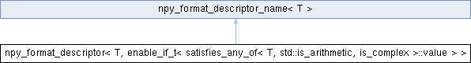

Correa
1
C++ library with Python bindings to analyse the shape of simple closed curves in R^2
Loading...
Searching...
No Matches
Static Public Member Functions
|
Static Public Attributes
|
List of all members
npy_format_descriptor< T, enable_if_t< satisfies_any_of< T, std::is_arithmetic, is_complex >::value > > Struct Template Reference
Inheritance diagram for npy_format_descriptor< T, enable_if_t< satisfies_any_of< T, std::is_arithmetic, is_complex >::value > >:
